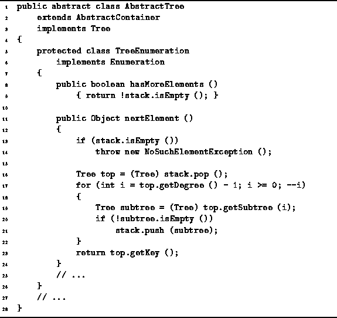

Data Structures and Algorithms
with Object-Oriented Design Patterns in Java
Data Structures and Algorithms
with Object-Oriented Design Patterns in Java
Program  defines the two standard methods
provided by enumerations,
hasMoreElements and nextElement.
The hasMoreElements returns true
as long as there are still more objects in the container
which have not yet been visited.
This is the case as long as there is something in the stack.
Therefore, the implementation simply calls isEmpty to test
whether the stack is empty.
Clearly, the running time for hasMoreElements is O(1).
defines the two standard methods
provided by enumerations,
hasMoreElements and nextElement.
The hasMoreElements returns true
as long as there are still more objects in the container
which have not yet been visited.
This is the case as long as there is something in the stack.
Therefore, the implementation simply calls isEmpty to test
whether the stack is empty.
Clearly, the running time for hasMoreElements is O(1).

Program: AbstractTree TreeEnumeration class hasMoreElements and nextElement methods.
The nextElement method returns the next object in the enumeration. In this case, the next object to be visited is at the root of the tree which is at the top of the stack. Note, the stack will never contain an empty tree. Therefore, if the stack is not empty, then there is an item to visit. The nextElement method pops the top tree from the stack and then pushes its subtrees onto the stack provided that they are not empty. Notice the order is important here. In a preorder traversal, the first subtree of a node is traversed before the second subtree. Therefore, the second subtree should appear in the stack below the first subtree. That is why subtrees are pushed in reverse order. The running time for hasMoreElements is O(d) where d is the degree of the tree node at found at the top of the stack.
 Copyright © 1998 by Bruno R. Preiss, P.Eng. All rights reserved.
Copyright © 1998 by Bruno R. Preiss, P.Eng. All rights reserved.